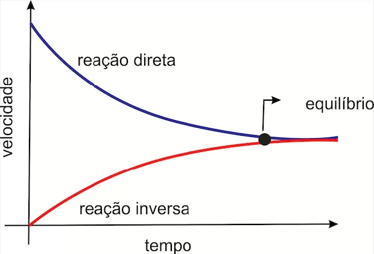
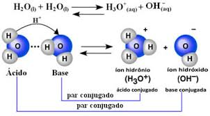
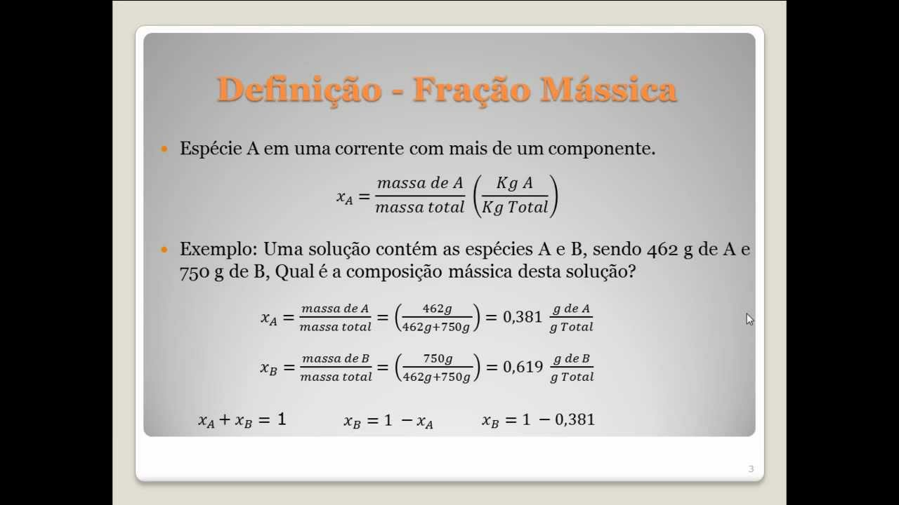

Playlist de Química


Parte por milhão (ppm)
É uma unidade de concentração usada para expressar a quantidade de soluto em soluções muito diluídas. O termo indica que existe uma parte do soluto para cada um milhão de partes da solução (ou do solvente), sendo comumente usado para monitorar a presença de traços de substâncias, como poluentes na água ou no ar.

Diluição das soluções
A diluição é o processo de tornar uma solução menos concentrada pela simples adição de mais solvente, mantendo-se a quantidade de soluto constante. É um procedimento muito comum em laboratório e no dia a dia, onde o volume total aumenta, mas a concentração da substância dissolvida diminui.

Misturas
Uma mistura é a junção física de duas ou mais substâncias, de modo que cada uma delas mantém suas propriedades químicas originais. Elas podem ser homogêneas (apresentam uma única fase, como água e sal) ou heterogêneas (apresentam mais de uma fase, como água e óleo).

Equilíbrio Químico
O equilíbrio químico é um estado dinâmico alcançado em reações reversíveis onde a velocidade da reação direta (formação de produtos) se torna igual à velocidade da reação inversa (formação de reagentes). Nesse ponto, as concentrações de reagentes e produtos permanecem constantes ao longo do tempo.
Esse princípio estabelece que, quando uma perturbação (como mudança de concentração, pressão ou temperatura) é aplicada a um sistema em equilíbrio, o sistema tende a se reajustar em uma direção que minimize ou anule o efeito dessa perturbação, restabelecendo um novo estado de equilíbrio.

São as condições externas que, ao serem alteradas, forçam o sistema em equilíbrio a se deslocar para a direita (sentido dos produtos) ou para a esquerda (sentido dos reagentes), de acordo com o Princípio de Le Chatelier. Os principais fatores são a variação da concentração de reagentes ou produtos, a temperatura e a pressão (em sistemas gasosos).

O produto iônico da água (Kw) é a constante de equilíbrio para a autoionização da água, sendo o produto das concentrações dos íons H+ (ou H3O$) e OH-. O pH e o pOH são escalas logarítmicas que medem, respectivamente, a acidez (baseado em H+) e a basicidade (baseado em OH-) de uma solução aquosa, onde pH+pOH = 14 a 25ºC.
É uma forma de expressar a concentração de uma solução, definida como a razão entre a massa do soluto e a massa total da solução (soluto + solvente). É um valor adimensional (sem unidade) e, quando multiplicado por 100, resulta na porcentagem em massa do soluto.
A Concentração Comum é a razão entre a massa do soluto e o volume da solução (geralmente em g/L). Já a Concentração Molar (ou Molaridade) é a razão entre o quantidade de matéria do soluto (em mols) e o volume da solução (geralmente em mol/L), indicando o número de partículas dissolvidas.

As soluções são classificadas com base em sua capacidade de dissolver soluto, em relação ao seu coeficiente de solubilidade em uma dada temperatura. Elas podem ser: insaturadas (com menos soluto que o máximo suportado), saturadas (com a quantidade máxima de soluto) ou supersaturadas (com mais soluto que o máximo, em estado instável).